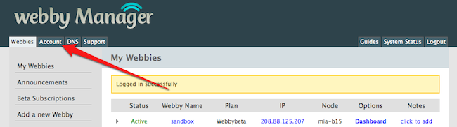
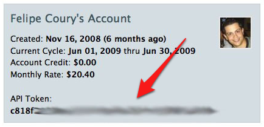

Rapid Application Deployment Engine
Bootstrapping
Before deploying your application, you need to specify a couple of configuration options. The first and most important is
where you’ll want to install it.
In order to do that, you’ll need to install the Webbynode’s RubyGem, by executing the following command:
$ sudo gem install webbynode
-=-=-=-=-=-=-=-=-=-=-=-=-=-=-=-=-=-=-=-=-=-
Webbynode Rapid Deployment Gem
-=-=-=-=-=-=-=-=-=-=-=-=-=-=-=-=-=-=-=-=-=-
This deployment engine is highly experimental and
should be considered beta code for now.
For a quickstart:
http://guides.webbynode.com/articles/readystacks/rapid-apps.html
Successfully installed webbynode-0.2.0
1 gem installed
Once it’s done, you have to initialize your app by running the init command and indicating to which Webby you want to deploy your app.
In case you don’t remember your Webbies by name or IP, you can use the webbies command to get a list:
$ wn webbies Fetching list of your Webbies... Webbies IP Node Plan Status webby3067 61.21.71.31 miami-b02 Webbybeta on sandbox 201.81.121.201 miami-b15 Webbybeta on
For this example, let’s say I want to install to sandbox.
Now that we know where to deploy, we run the init command. Besides the Webby, you can specify the DNS you want your app to respond to.
When in doubt about any command of the Webbynode Gem, you can use the --help option and a nice explanation of the command and it’s options will be displayed. Here’s the help for the init command we’re going to run:
$ wn init --help
Prepares the application on current folder for deployment
Usage: webbynode init webby [dns] [options]
Parameters:
webby Name or IP of the Webby to deploy to
dns The DNS used for this application, optional
Options:
--adddns Creates the DNS entries for the domain
--engine Sets the application engine for the app
If you don’t specify the domain name during initialization, the Rapid App Engine will assign a temporary one, so you can use your website and even share it without having to buy a domain.
However, if you already own an domain and considering its Name Servers are already pointing to Webbynode’s Name Servers (check this guide to make sure), the gem can even create the appropriate configuration entries for you. If that’s what you want, just use the --adddns option.
OK, so let’s say you have created a Rails app called sampleapp. If we don’t don’t provide the domain option as described above, it will respond to sampleapp.webbyapp.com (it’s always name-of-app.webbyapp.com — in case your app’s name is already taken, we’ll add numeric suffixes — like 1, 2, … — until we find an unique name for you).
So let’s try it:
$ cd ~/dev/sampleapp
$ wn init sandbox
[Webbynode] Initializing application sampleapp with dns sampleapp
Retrieving IP for Webby sandbox...
Webbynode API Token
For optimal usage of all the features provided by the Webbynode Gem, we need to
interact with your account.
Please provide below the email you use to login on Webbymanager and your API
Token. The API token can be found on the Account section of Webbymanager. For
more instructions, visit this link:
http://guides.webbynode.com/articles/rapidapps/bootstrapping.html
Please provide your credentials below.
Login email:
Interacting with Webbynode API
In order to interact with your account, the Webbynode Gem will need the email and API Token you use in Webbymanager. In case you don’t know where it is, open manager and click the Account tab, like shown below:

And then copy the token under your account Overview section:

From this point on you won’t have to input this information again, since it’s now stored on a file called .webbynode under your home directory.
After entering your email and API token, the process continues:
Please provide your credentials below.
Login email: fcoury@me.com
API token: c818f....
Initializing directory structure...
Initializing git and applying initial commit...
Adding webbynode as git remote...
[Webbynode] Application sampleapp ready for Rapid Deployment
And now your application is ready for deployment.
Here’s a summary of what just happened:
- If your application doesn’t have a git repo, we’ll create one for you. After that, we’ll create a new remote source for this new git repo called
webbynodepointing to your Webby’s IP;
- Now, if you app already has a git repo, we’ll just create the new remote as described above;
- We add a couple of configuration files to your repository;
- And we create a new commit for this change.
And your app is now ready to be published. Congratulations!
Basic Topics
Advanced Topics